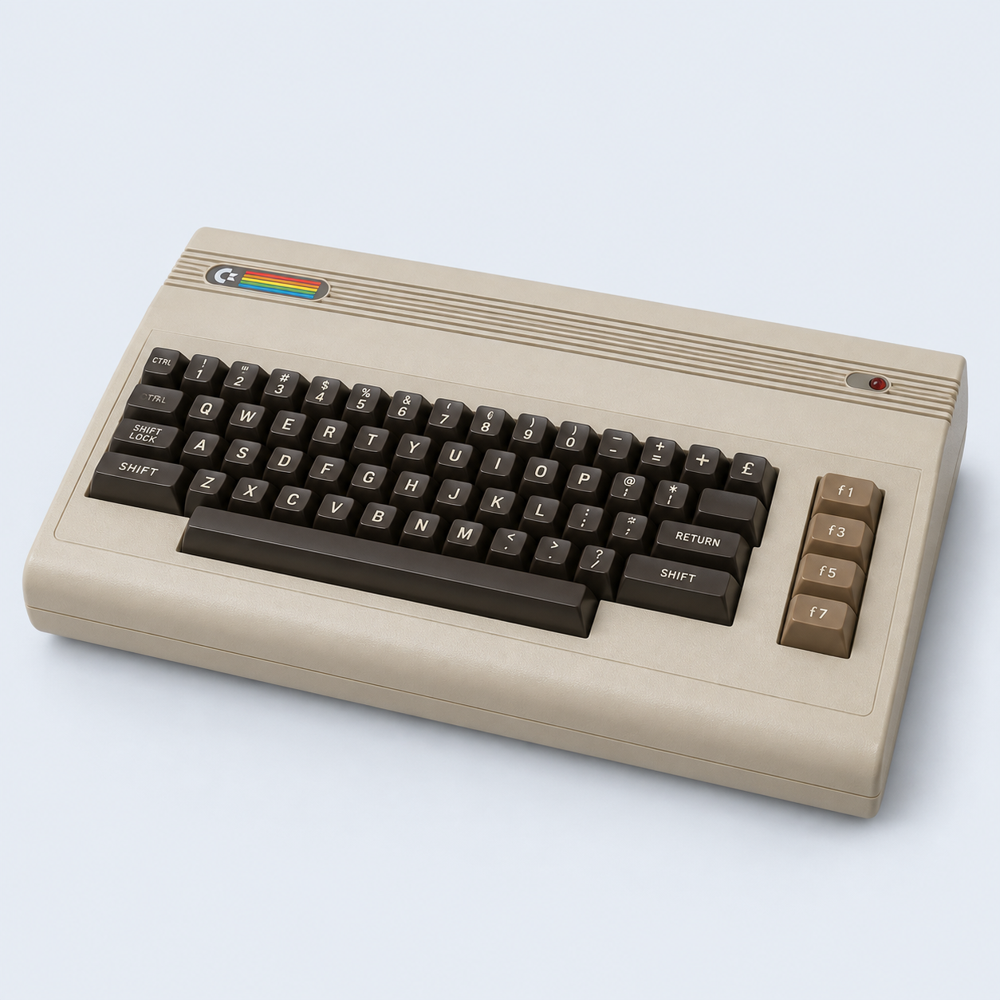
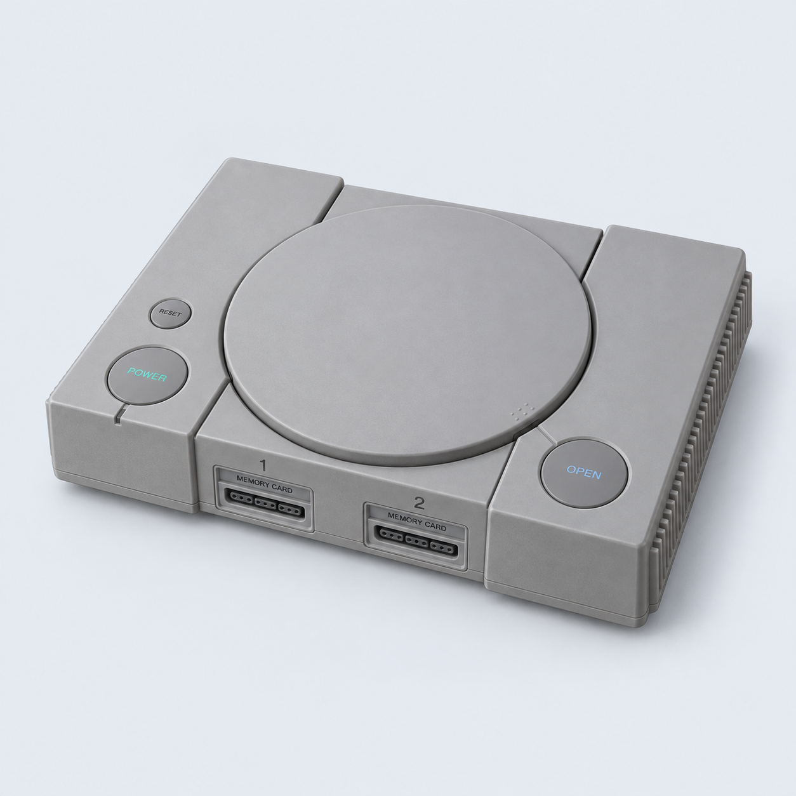
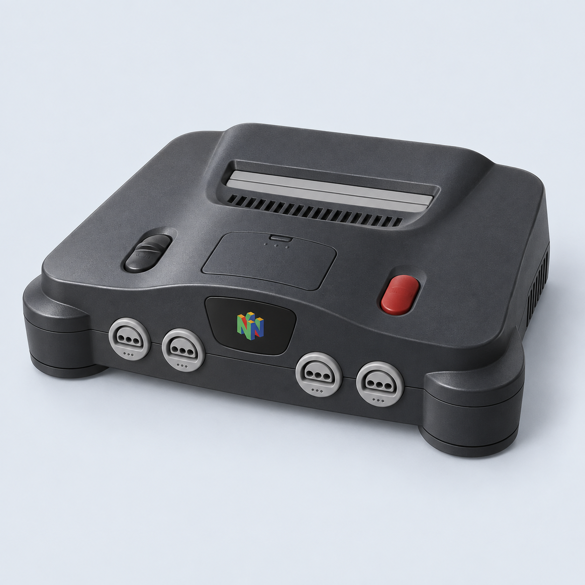
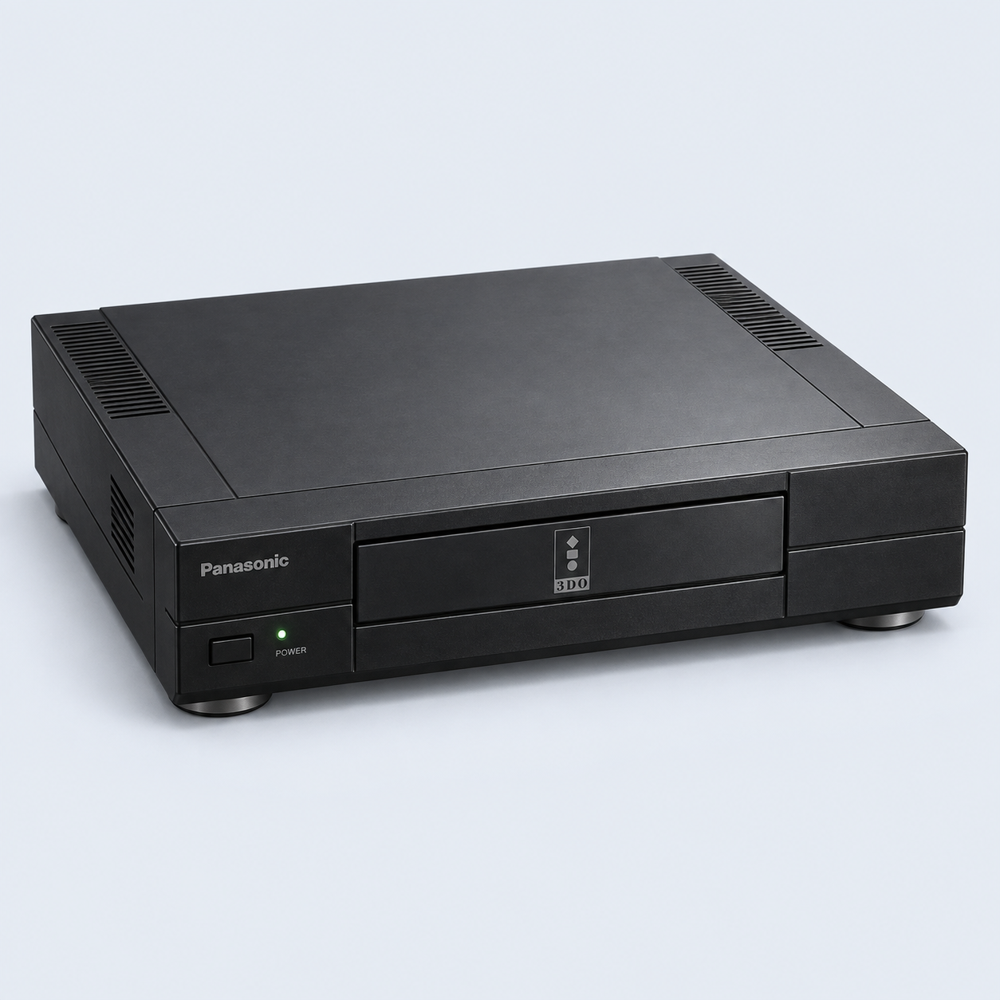
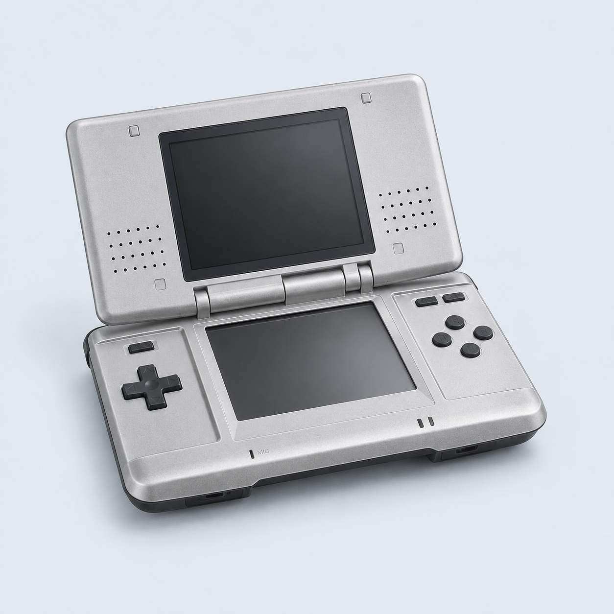
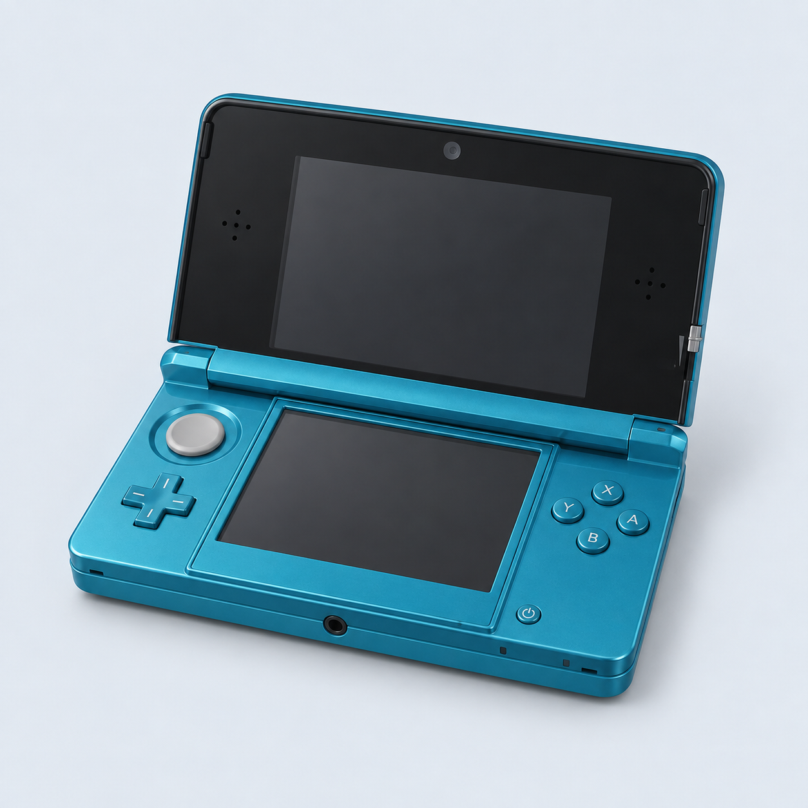
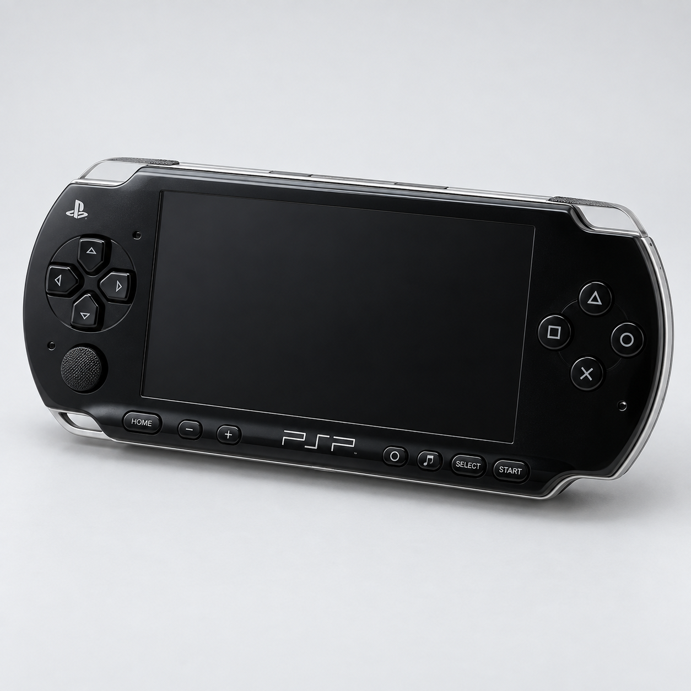
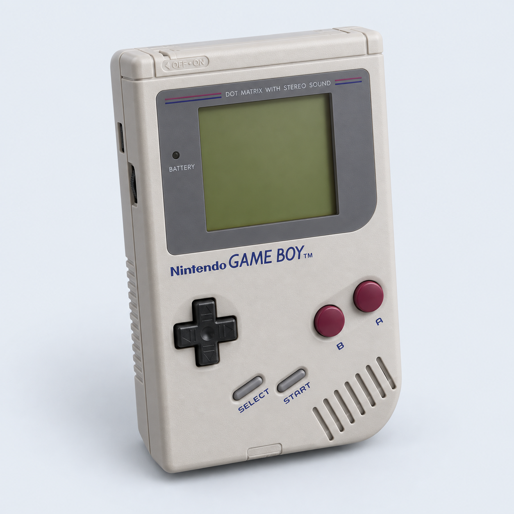
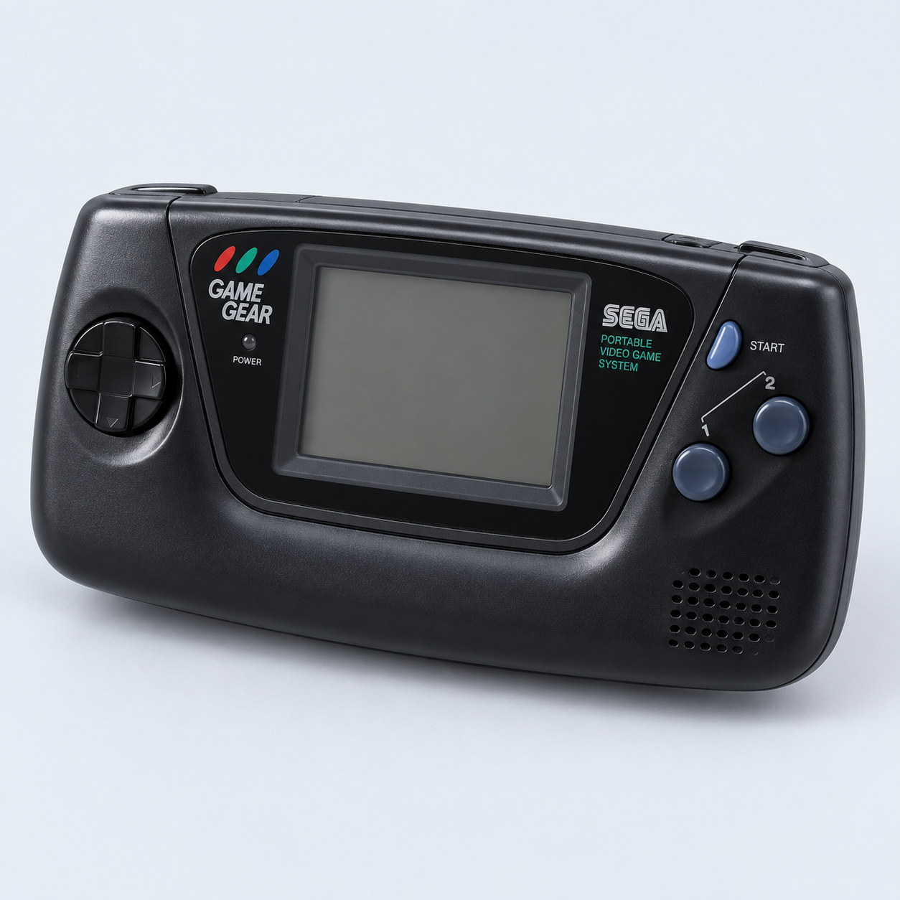

Choose a machine.
Bring a game image. Run its original code, then take a closer look.
Games stay on your computer. C64 firmware is included.

Commodore 64
1982 · Tape images
PlayStation
1994 · Disc images
Nintendo 64
1996 · Cartridges
3DO
1993 · Disc images
Nintendo DS
2004 · Cartridges · Touch screen
Nintendo 3DS
2011 · Decrypted cartridges · Touch screen
PlayStation Portable
2004 · ISO / CSO UMD images
Game Boy
1989 · Cartridges